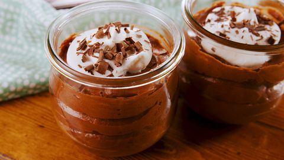
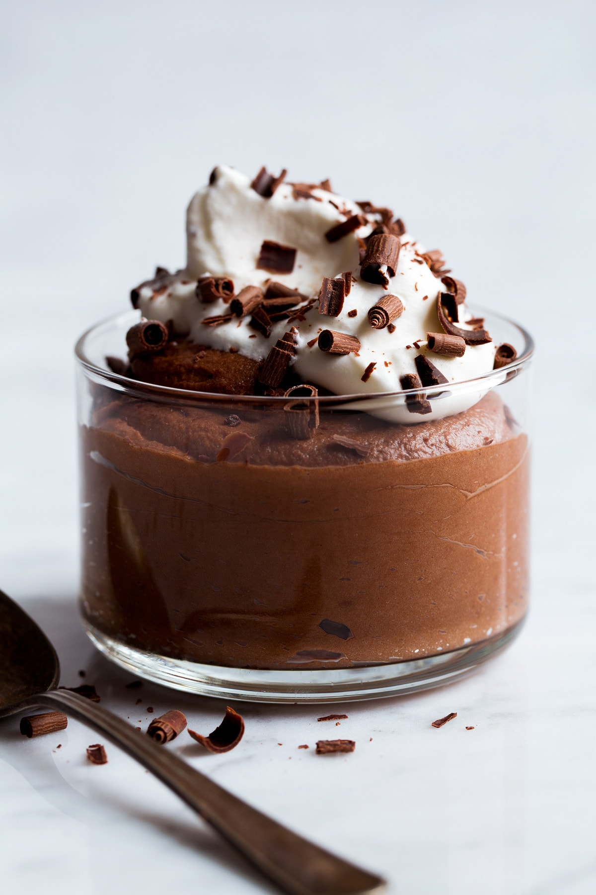
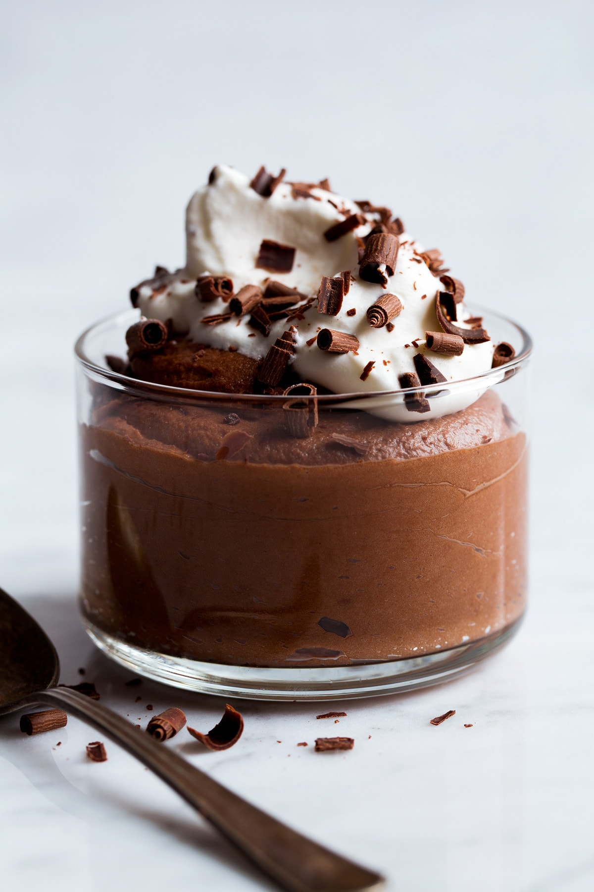

Chocolate mousse

 

Description
Have you ever just craved something so bad that it drives you crazy. Well, That's how I feel about
chocolate mousse. I used to eat it alot as a kid but since then had forgotten about it. Until oneday, stumbled upon a
post about it. Since then, the craving started and never stopped. I knew I had to make it but....
HOW!. My mom used to make it for me and when I asked her for the recipe,
She said she had forgotten.
From then onwards, The search for the BEST CHCOCOLATE MOUSSE had started. And today (FINALLY),
I am confident enough to say that I have officially come up with the Ultimate chocolate mousse recipe.
ENJOY!!
Ingredients
The things you will need to make this addicting mousse are as follows:
- 1 CUP or 250g Heavy Whipping Cream (Unsweetened)
- 1/4 CUP or 50g Sugar
- 1 CUP or 200g Semi Sweet Chocolate
- 3 Egg Whites
- Pinch of salt
- chocolate chips (optional)
Steps
- On a double boiler,Add the chocolate and let it melt, string occasionally. Set it aside.
NOTE:Save the double boiler.
- Whip your cream until soft peaks form. approx. 7 minutes.
- Using the double boiler from earlier, Beat the egg Whites while adding your sugar
in thirds every 1 minute. Continue to beat the egg until you get stiff peaks. you'll know you're done
when you can place it on your head without it falling;)
- Add a little of your egg white mixture into the whites and mix well. Now add that mixture into the rest
of your egg whites and FOLD. DONOT MIX! or else you'll deflate all your efforts
- Now fold the chocolate and egg white mixture into the whipped cream.
- Spread your mousse on a dish and chill for atleast 2-3 hours. Or freeze for 1 hour ;)
- Garnish with chcocolate chips (optional).
- Dig in.